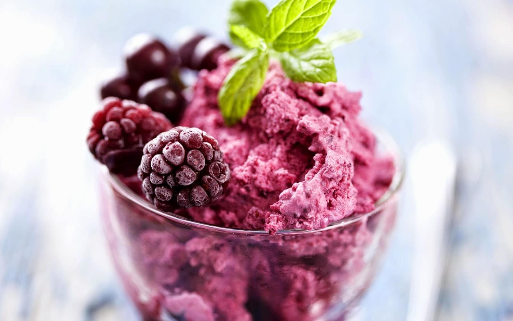

COCINEMOS EN CASA
Consejos útiles
Antes de empezar debes:
1. Leer cuidadosamente la receta para tener por seguro de tener todo lo necesario,
2. Ponerse un delantal, lavarse las manos, sujetarse el cabello
3. Medir cuidadosamente todos los ingredientes,
4. tener cuidado con los chuchillos y las cosas calientes,
5. lavar bien las frutas y verduras,
6. no olvidarse de apagar las fuentes de calor y aparatos electricos,
dejar todo limpio.
(Para asegurar el éxito hay un secreto)
diviertete y hazlo con amor
clasificacion de dificutad
antes de comenzar una receta es bueno conocer el grado de dificultad por eso los indicaremos con colores:
-amarillo(receta muy facil)
-naranja (receta mas elaborada)
-rojo (mas dificil necesita cuidado)
como medir
El exito de cualquier receta depende de la precisión para medir los ingredientes.
Para facilitar el trabajo soló utlizaremos medidas de tazas, cucharadas y cucharaditas.
Para medir los ingredientes secos debe llenarse la taza por cucharadas,
sin presionar, hasta que este llena y con la ayuda de una espátula o un cuchillo nivelar las superficies.
antes de medir la harina se debe revolver con un tenedor para que este más suelta y su medida sea correcta.
Paramedir la mantequilla,
la margarina o cualquier otro ingrediente debe ser modificado la taza de medir seca y,
con la ayuda de una espátula de cacao,
empujar fuertemente para asegurar de que no hay espacios con aire.
A veces estos productos vienen empacados en 1/2 libra,
equivalente a 1 taza (16 cucharadas),
y 1/4 de libra,
equivalente a 1/2 taza (8cucharadas).
Para medir cucharadas y cucharaditas,
frecuentemente deben llenarse hasta el borde si el ingrediente es líquido,
llenarse y nivelarse bien con un chuchillo si es seco o es grasa.
colores para pintar con los dedos
| ingredientes |
cantidad |
| maizena |
1 taza |
| agua fria |
2 taza |
| colorantes de comida |
los que quieras |
| azucar |
3 cucharadas |
| sal |
1 cucharadita |
Nota:
tapar muy bien para guardar
- En una olla mediana mezcla bien todos los ingredientes.
- Cocinar a fuego bajo durante unos 10 a 15 minutos,
revolviendo siempre con cuchara de madera,
hasta que la mezcla esté espesa y suave.
Dejar enfriar.
- Dividir la mezcla en pequeños recipientes,
tantos como quieras.
- Agregar uns pocas gotas de color a cada uno de los recipientes.
Mezclar muy bien y decidir si se quiere agregar más color.
Ahora :jugar al artista es muy divertido!
masa artistica
| ingredientes |
cantidad |
| sal |
1 taza |
| agua |
1 taza |
| harina |
2 tazas |
Nota:
si se quieren coclocar las formas,
antes de meterlas al horno se les hace un huequito con el palillo
- En un tazón mezclar bien la sal,
la harina y el agua hasta hacer una masa.
- Sobre una superficie enharinada y con la ayuda de un rodillo extender la masa hasta que tenga medio centímetro de espesor.
- Con cortadores de galletas corta formas diferentes.
- Colocar las formas en latas para galletas y meterlas al horno precalentado a 325grados durante 30 minutos.
dejar enfriar.(Quedan duras)
plastilina cocinera
| ingredientes |
cantidad |
| harina |
dos y media taza |
| alumbre en polvo |
1 cucharada |
| aceite de cocina |
2 cucharadas |
| sal |
media taza |
| agua |
2 tazas |
| colorante de comida |
los que quieras |
Nota:el alumbre se consigue en las droguerias,
si no lo hay en polvo,
lo hay en cristales como piedras;
se envuelve en un trapo o un plastico grueso y se tritura bien golpeándo con un martillo
- En un tazon grande,
mezclar harina,
sal y alumbre.
Dejar a un lado.
- En una olla mediana,
hervir el agua con el aceite.
Retirar del fuego y vaciar sobre la mezcla de la harina mezclando muy bien.
Poner esta masa sobre una mesa y amasar fuertemente hasta que esté suave.
- Dividir la masa en partes y dar los colores que se quiera agregando unas gotas de colorante.
- Guardar en un recipiente con tapa o bien envuelta en plástico; así estará siempre lista para jugar.
bolitas de queso
| ingredientes |
cantidad |
| queso |
3 tazas |
| huevos |
2 |
| sal y pimienta |
algusto |
| harina |
media taza |
| nuezmoscada |
1 pizca |
| aceite para freir |
lo que consideres suficiente |
- Mezclar todos los ingredientes muy bien (menos el aceite).
- Para que la masa no se pegue en las manos untarse las palmas con aceite y formar bolitas del tamaño de una uva.
A medida que se van haciendo colocarlas, sin que se toquen,
en una lata limpia.
Llevarlas al congelador.
- Una vez que estén bien congeladas (duras),
despegarlas de la lata y guardarlas en bolsa plastica en el congelador hasta el momento en que se vayan a freír.
- Colocar en el fuego una sartén con suficiente aceite;
cuando esté bastante caliente echar una buena cantidad de las bolitas congeladas.
Freírlas hasta que doren.
Sacarlas con una espumadera escurriendolas sobre una servilleta de papel para que no queden grasosas.
Sevirlas inmediatamente.
dip sahara
| ingredientes |
cantidad |
| crema de cebolla |
media taza |
| crema de leche espesa |
1 taza |
Nota:este dip o crema para untar, despierta la curiosidad de todos. A pesar de ser una mezcla muy sencilla aparenta ser complicadísima y su sabor es delicioso
- mezclar bien los ingredientes con un tenedor.
Dejar reposar por lo menos 2 horas en el refigerador.
- Sirve para untar papas fritas,
tortillas de maíz y plátanos fritos o para varias verduras crudas
(palitos de zanahoria, apio, pepinos, etc.).
guacamole
| ingredientes |
cantidad |
| aguacates |
2 |
| cilantro picado |
1 cucharada |
| perejil picado |
1 cucharada |
| salsa de aji |
al gusto |
| cebolla blanca picada |
2 cucharadas |
| jugo de limón |
2 cucharadas |
| sal |
media cucharadita |
- pelear los aguacates (reservar las pepas).
Triturarlos bien con la ayuda de un tenedor o aparato eléctrico.
- Agregar el reto de ingredientes mezclando bien.
- Pasar al recipiente en que se va a servir (no debe ser metálico) y colocar encima las pepas,
con el objetivo de conservar el bello color verde del aguacate.
- Puede servirse con papas,
plátanos, yuca,
tortillas fritas,
empanadas,
sopas ,
carnes,
etc.
pate de atún
| ingredientes |
cantidad |
| queso crema |
media taza |
| lata de atún |
2 |
| cebolla cabezona rallada |
1 cucharada |
| salsa de tomate |
2 cucharadas |
| salsa de aji |
media cucharada |
Nota:para desmoldar fácilmente,
sumergir el molde un momento en agua caliente.
Para hacer tostadas de pan, usar los pancitos especiales para perro cortarlos en reanadas pequeñas,
y tostarlaas lentamente en el horno a 250°.
- En la batidora o en el procesador, mezclar bien todos los ingredientes.
- Untar un molde con aceite de mesa o de oliva;
vaciar en él la mezcla apretándola e igualando bien la superficie con la ayuda de una espátula.
Poner a helar en el refrigerador por lo menos durane 3 horas o hasta el dia siguiente.
- Desmoldar con cuidado sobre una bandeja apropiada y adornar con lo que se desee
(ramas de perejil, lechuga, rodajas de pepino, aceitunas, etc).
Servir acompañado de tostaditas de pan o galletas variadas.
perritos agri-dulces
| ingredientes |
cantidad |
| frazco de mermelada |
1 |
| vinagre |
un tercia de taza |
| salchichas |
1 libra |
| moztaza |
3 cucharadas |
| sal |
1 cucharada |
Nota:A la salsa agri-dulce se le pueden agregar trocitos de piña o melón
mezclar muy bien la mermelada con el vinagre, la mostaza y la sal y poner a hervir a fuego medio.
Hervir en una olla 3 tazas de agua.
pelar los perritos (si son grandes cortarlos en pedacitos),
echarlos en el agua hirviendo por unos 2 minutos.
Escurrirlos bien y agregarlos a la mezcla de la mermelada.
Servir calientes o tibios acompañados de palillos o tenedores.
vichyssoise
| ingredientes |
cantidad |
| frazco de mermelada |
1 |
| puerros gruesos |
4 |
| cebolla blanca |
1 |
| mantequilla |
un cuarto de taza |
| papas |
5 |
| sal y pienta |
al gusto |
| cebollin |
1 cucharada |
| crema de leche espesa |
2 tazas |
| caldo de pollo |
4 tazas |
Nota: la deliciosa vichyssoise puede servirse de varias maneras:
bien se dejandolas con las papas trituradas o licuada. Se puede tomar caliente pero es mas popular helada
1.lavar los puerros,
descartar lo verde y cortar la barte blanca de manera fina;
cortar de la misma manera la cebolla.
Lavar y pelar las papas, cortarlas en cuadritos pequeños.
2.En una olla, dorar ligeramente en la mantequilla los puerros y la cebolla.
Agregar las papas y el caldo;
dejar hervir a fuego medio durante 40 minutoso hasta que esté muy blando.
Dejar reposar.
3.Licuar ligeramente y volver a poner en la olla, agregar la leche y la crema;
hervir nuevamente.
retirar del fuego,
salpimentar al gusto.
4.Enfriar o refigerar hasta que este helada y servir adornada con cebollín.
huevos para una multitud
| ingredientes |
cantidad |
| huevos |
1 por persona |
| queso rayado |
1 taza |
| mantequilla |
suficiente para untar |
Nota:no olvides la lata para hacer cupcakes
embadurnar muy bien las cavidades de lata con la mantequilla ;
salpimentar ligeramente,
romper en cada una un huevo .
Espolvoreando por encima un poco de queso y colocar un pedacito de mantequilla.
Llevar al horno hasta que cuajen al punto deseado,
más o menos de 8 a 10 minutos.
mágico soufflé de queso
| ingredientes |
cantidad |
| queso blanco |
3 tazas |
| leche |
media taza |
| mantequilla |
media cucharada |
| huevos |
4 |
| harina |
1 cucharada |
| sal y pienta |
al gusto |
Nota:no olvides tu molde refractario, enmantequillado y enharinado, encender el horno a 450°
Batir los huevos en la licuadora. Agregar el queso,
la mantequilla, la harina y la pimienta.
Batir un momento.
Vaciar esta mezcla en el molde refrctario ya preparado.
Meter al horno por 40 minutos.
Servir inmediatamente muy caliente.
seviche de camarones
| ingredientes |
cantidad |
| camarones pelados |
1 libra |
| jugo de limon |
2 tazas |
| jugo de naranja |
media taza |
| sal y pienta |
al gusto |
| cilantro picado |
opcional |
| cebolla cabezona |
1 taza |
| cebolla larga picada |
1 taza |
| salsa de tomate |
1 taza |
| salsa de aji |
al gusto |
| aceite |
al gusto |
Nota:asi mismo se piede hacer hacer el seviche de pezcado (con trocitos de pezcado)
En una olla con agua hirviendo echar los camarones congelados ;
esperar hasta que se despleguen y estén ligeramente rosados.
Escurrirlos enseguida y ponerlos bajo el chorros de agua fría para paralizar su cocción.
En un recipiente que no sea metálico vaciar el jugo de limón y naranja,
agregar las 2 clases de cebolla, los camarones (ya frios),
la salsa de tomate,
el ají y salpimentar al gusto.
Remover bien cuchara de madera (no puede ser metalica).
tapar y poner en el refrigerador hasta el dia siguiente.
Antes de servir,
verificar el sabor ,
agrear el aceite y el cilantro.
Servir el ceviche acompañado con rositas de maíz y galletas saltinas.
pan y queso gratinado
| ingredientes |
cantidad |
| pan viejo |
4 tajadas |
| mantequilla |
2 cucharadas |
| sal |
una pizca |
| leche |
1 taza |
| huevos |
2 |
| queso rayado |
1 taza |
Nota:precalentar el horno a 375°
En una vasija mezclar la leche,
los huevos batidos y la pizca de sal.
sumergir las tajadas de pan en esta mezcla.
con las 2 cucharadas de mantequilla engrasar un molde refractario o una lata,
colocar alli las tajadas remojadas y cubrirlas con el queso rallado.
Meter al horno por 20 o 25 minutos o hasta que doren.
servir enseguida.
medallones de lomito a la sartén
| ingredientes |
cantidad |
| mantequilla |
2 cucharada |
| sal y pimienta |
al gusto |
| lomo |
4 tajadas de uno y medio cm |
| aceite |
una cucharada |
| cebolla |
una cucharada |
| caldo de res |
media taza |
| perejil |
1 cucharada |
| diente de ajo |
1 |
| salsa de aji |
al gusto |
Nota:el caldo se puede reemplazar el caldo por vino blanco o vino tinto
poner a fuego alto en una sartén el aceite y la mantequilla hasta que estén bien calientes.
Secar muy bien las carnes y freírlas 2 minutos por cada lado,
teniendo cuidado de que no se toquen entre sí;
colocarlas en una bandeja caliente y salpimentarlas.
Para hacer la salsa: agregar la cebolla picada y el ajo a la sartén en donde se hn cocinado las carnes y cocinar por medio minuto.
Agregar el caldo y dejar que se consuma un poco.
Agregar la mantequilla y el pereji y vaciar estasalsa bien caliente sobre la carne.
albondigón
| ingredientes |
cantidad |
| pan fresco |
3 tajadas |
| cebolla cabezona |
un cuarto de taza |
| carne molida |
media libra |
| sal y pienta |
un cuarto de cucharada |
| salsa inglesa |
1 cucharada |
| huevo |
1 |
Nota:precalentar en el horno a 350°
remojar el pan en la leche.
En un tazón grande mezclar bien todos los ingredientes, incluido el pan remojado.
Vaciar la mezcla en un molde alargado (lata para hacer pan) y asar durante una hora.
hamburguesas

| ingredientes |
cantidad |
| carne de res |
media libra |
| crema agria |
2 cucharadas |
| sal |
media cucharada |
| cebolla cabezona |
2 cucharadas |
| huevo |
1 |
| tomillo |
un cuarto de cucharada |
| aceite |
1 cucharada |
| harina |
lo necesario |
Nota:la carne debe tener poca grasa para que la hamburguesa sea más suave y jugosa
poner la carne molida en un tazón,agregarle el huevo,
la crema agria,
la cebolla rallada,
el tomillo,
la sal y la pimienta;
mezclar todo y formar 4 o 5 hamburguesas grandes.
Calentar el aceite en una sartén.
Espolvorear con un poco de harina las hamburguesas y sofreirlas de 2 a 3 minutos por cada lado
(según se quieran más o menos cocidas).
Servir con una buena ensalada o si se quiere en medio del pan característico con salsa de tomate,
mostaza,
lechuga y acompañada con papas fritas.
pollo con hojuelas de maíz
| ingredientes |
cantidad |
| hojuelas de maíz |
2 tazas |
| sal ypimienta |
media cucharada de sal |
| perniles de pollo |
8 |
| mantequilla |
un cuarto de taza |
Nota:una variante posible es unar miga de papas fritas en vez de las hojuelas de maíz
Poner las hojuelas de maíz en una bolsa plástica,
cerrar la bolsa y con un rodillo triturarlas.
Poner estas migas en un plato.
Poner la mantequilla en una sartén y derretirla a fuego suave.
Retirar del fuego y agrear la sal y la pimienta revolviendo bien.
secar muy bien los perniles.
Con la ayuda de una brocha untarlos por todos los lados con la mantequilla derretirla y enseguida revocar uno a uno en las migas;
deben quedar bien cubiertos.
Poner los perniles en un molde o lata teniendo cuidado de que no se toquen entre si.
Meter al horno por unos 50 o 60 minutos.
Con la ayuda de guantes o agarraderas, sacar del horno y servir.
pollo al limón
| ingredientes |
cantidad |
| jugo del limón |
media taza |
| crema de leche |
media taza |
| hongos |
opcional (1 lata) |
| pollo en trozos |
1 pollo |
| mantequilla |
2 cucharadas |
| sal y pimienta |
al gusto |
salpimentar los trozos de pollo.
en una sartén calentar la mantequilla y dorar en ella el pollo
(no cocinarlo si no apenas dorarlo por todos los lados).
Colocar los trozos de pollo ya dorados en una olla,
agregar la 1/2 taza de jugo de limón, tapar bien y poner a fuego muy suave hasta que el pollo esté blando,
teniendo cuidado de que no se vaya a desbaratar.
Retirar del fuego si va a servirse más tarde.
Calentar, unos 10 minutos antes de servir, agregarle la 1/2 taza de crema y si desea los hongos.
No dejar que hierva porque se corta la crema.
Servir acompañado de arroz blanco o papas para "recoger" la salsa.
ensalada de pollo
| ingredientes |
cantidad |
| caldo de pollo |
2 tazas |
| mayonesa |
media taza |
| crema de leche espesa |
media taza |
| apio picado |
media taza |
| almendras toztadas |
opcional |
| pechugas/td>
| 2 |
| manzanas |
2 |
| uvas pasas |
un tercio de taza |
| jugo de limon |
3 cucharadas |
| sal y pimienta |
al gusto |
Nota:se puede servir sobre hojas de lechuga
en una olla hervir el caldo,
agregar pechugas lavadas, reducir el calor, tapar y cocinar por 10 minutos.
retirar del fuego y dejar enfriar.
Remojar las pasas en agua caliente durante 2O minutos. Escurrir bien.
Lavar el apio, quitarle las hebras con pelador de papas y cortarlo en trocitos.
Pelar las manzanas, sacarles el corazón y cortarlas en cuadritos.
(Rocearlas con un poco de jugo de limón para evitar que se oscurezcan).
Quitar la piel y el hueso a las pechugas; cortarlas en cuadritos.
Combinar en un recipiente grande la mayonesa con la crema y el jugo de limón;
agregar todos los demás ingredientes, mezclar bien. Salpimentar si es necesario.
Refrigerar por lo menos una hora antes de servir.
atún a la reina
| ingredientes |
cantidad |
| leche |
2 tazas |
| atún |
2 lataz |
| maíz tierno |
media lata |
| harina |
4 cucharadas |
| mantequilla |
4 cuharadas |
| huevos |
4 |
| sal |
al gusto |
En la licuadora batir bien la leche con la harina y sal hasta que no tenga grumos.
En una sartén derretir la mantequilla a fuego medio,
agregar la mezcla de la leche y sin dejar de revolver cocinar hasta que espese.
Agregar el atún,
los huevos y el maíz.
Cocinar hasta que esté muy caliente.
Sevir sobre tostadas
ensalada de repollo
| ingredientes |
cantidad |
| repollo |
1 |
| pimentón rojo |
1 |
| sal |
1 cucharada |
| cebolla cabezona |
2 |
| azucar |
media taza |
| miel |
2 cucharadas |
| vinagre blanco |
1 taza |
Cortar en tiras el repollo, las cebollas y el pimentón.
Mezclar todos los otros elementos:
azucar,
sal,
miel,
aceite y vinagre,
ponerlos a hervir.
Retirar del fuego y así caliente vaciar las verduras.
Enfriar y menter en el refrigerador antes de servir.
ensalada verde
| ingredientes |
cantidad |
| lechuga |
1 |
| aceie para ensalada |
3 cucharada |
| vinagre |
1 cucharada |
| perejil picado |
1 cucharada |
| diente de ajo |
opcional |
| sal y pimienta |
opcional |
1.Deshojar con cuidado la lechuga y lavar las hojas en mucha agua fresca.
Escurrirlas bien, con cuidado,
y con las manos partirlas en pedazos.
2.En una ensaladera mezclar bien todos los ingredientes de la vinagreta.
3.Mantener la vinagreta y las hojas de lechuga en el refrigerador y hacer la mezcla solo en el momento de servir para que no se marchite la lechuga.
papas cosmonautas
| ingredientes |
cantidad |
| papas |
4 |
| crema agria |
media taza |
| cebollin picado |
opcional |
| perejil picado |
1 cucharada |
Nota:no olvides el alumio y precalentar el horno a 400°
Lavar las papas.
Untarlas de sal y envolver cada una en suficiente papel de aluminio para queden bien encerradas.
Llevarlas al horno y asarlas hasta que al introducir un cuchillo delgado se sientan blandas.
(Entre 45 y 60minutos)
Sacarlas del horno. Con un cuchillo hacerles una incisión a lo largo.
paño de cocina o un un uoɔ asopuoibəjod quante para no quemarse,
apretarlas en el sentido contrario de la incisión para que se abran como el cráter de un volcán.
Colocar en el centro del cráter una buena cucharada de crema agria,
espolvorear con la cebolla y llevar a la mesa con su vestido metálico.
arroz cocacolo
| ingredientes |
cantidad |
| arroz |
2 tazas |
| salsa soya |
1 cucharada |
| coca cola |
4 tazas |
| sal |
1 cucharada |
| uvas pasas |
media taza |
1.En una olla de tamaño regular calentar a fuego medio la mantequilla y el aceite,
agregar la coca cola la salsa de soya y la sa.
2.Subir el calor,
dejar hervir a fuego fuerte hasta que se consuma la coca cola.
AAgregar las pasas,
revolver con cuidado con un tenedor.
Tapar,
bajar el fuego al minimo y dejar cocinar más o menos 20 minutos. servir caliente.
tallarines al tomate

| ingredientes |
cantidad |
| tallarines |
media libra |
| perejil picado |
2 cucharadas |
| oregano |
media cucharada |
| queso parmesano |
media taza |
| aceite de oliva |
media taza |
| tomates maduros |
1 libra |
| diente de ajo picado |
1 |
| sal y pimienta |
al gusto |
Nota:para cocinar la pasta hacerlo en abundante agua
Para pelar los tomates:
hervir suficiente cantdad de agua y sumergir en ella los tomates 4 o 5 minutos Sacarlos y pasarlos a un recipiente con agua fria y dejar que se refresquen Pelarlos,
cortarlos por la mitad, sacarles las semillas y cortarlos en trozos .
En una olla calentar a fuego medio el aceite y sofreir ligeramente el ajo y el perejil Agregar los tomates,
la sal,
la pimienta y el orégano.
Cocinar durante unos 15 o 20 minutos revolviendo un par de veces.
Mientras tanto, se cocina la pasta durante unos 15 minutos
(el tiempo depende de la calidad de la pasta) hasta que se sienta al dente Escurrirla,
pasarla a la bandeja y cubrirla con la salsa de tomate.
Servir con el queso parmesano.
esponjado de frutas
| ingredientes |
cantidad |
| jugo de frutas |
2 tazas |
| gelatina sin sabor |
2 cucharadas |
| agua fria |
media taza |
| aceite |
media cucharada |
| huevos |
6 |
| azúcar |
1 taza |
| sal |
1 pizca |
En media taza de agua Iria desleir las 2 cucharadas de gelatina.
Dejar reposar.
Mezclar bien el jugo de fruta con las yemas y poner fuego medio hasta que hierva sin dejar revólver.
Retirar del fuego y agregar la mezcla de gelatina,
revólver hasta que se disuelva.
Dejar entriar.
Con una batidora eléctrica,
batir las claras junto con la pizza de sal hasta que están a la nieve;
sin parar máquina agregarles poco a poco el azúcar.
Por último,
verter lentamente el jugo a las claras hasta que quede bien incorporado.
Vaciar la mezcla en un molde aceitado y llevar al refrigerador hasta que cuaje
(unas 4 horas).
Antes de servir,
desmoldar sumergiendo el molde por un instante en un recipiente con agua caliente.
Voltearlo sobre el plato de servir.
helados deli

| ingredientes |
cantidad |
| crema de leche /td>
| 1 taza |
| azucar |
un cuarto de taza |
| leche |
2 cucharadas y 2 tazas |
| mermelada |
1 taza |
| clara de huevo |
2 |
| sal |
1 pizca |
Batir la crema de leche con el azúcar para que espese un poco,
agregar la mermelada, las leches
(liquida y en polvo).
Batir las claras con la pizca de sal a punto de nieve.
Incorporar suavemente a la primera mezcla.
Vaciar en molde y congelar por 2 horas.
Pasadas las 2 horas.
sacar del congelador y volver a batir.
Regresar al congelador hasta que cuaje completamente.
helados de moras

| ingredientes |
cantidad |
| crema de leche |
1 taza y |
| azucar |
1 taza |
| moras |
1 taza |
| agua |
un cuarto de taza |
1.Triturar las frutas con el azúcar y el agua.
2.Batir la crema en un tazon hasta que esté espesa.
3.Mezclar bien la crema con las frutas.
4.Llenar con la mezcla un molde o moldecitos individuales y llevar al congelador.
mousse de limón verde
| ingredientes |
cantidad |
| huevos |
6 |
| limones |
3 |
| azucar |
1 taza |
| sal |
1 pizca |
| crema de leche |
3 cucharadas |
Con la batidora eléctrica batir muy bien las yemas y el azúcar hasta que estén espumosas y de color claro.
Agregar el jugo de los trenes limones,
revólver Y poner esta mezcla a cocinar en bañomaria revolviendo todo el tiempo hasta que tenga consistencia de crema.
Retirar del bañomaria y dejar enfriar.
Batir las claras, agregando una pizca de sal,
hasta que estén a la nieve Luego,
con la ayuda de una espátula,
incorporando, delicadamente y con movimiento envolvente a la mezcla de las yemas.
Poner la preparación en copas y colocarlas en el refrigerador por lo menos una hora.
Decorar cada copa con un poco de crema de leche batida y ralladura de limón.
pastel de caramelado de piña
| ingredientes |
cantidad |
| rodajas de piña |
1 tarro |
| sal |
1 pizca |
| huevo |
2 |
| harina |
tres cuartos de harina |
| polvo para hornear |
media cucharada |
| jugo de piña |
5 cucharadas |
| azucar |
tres cuartos de taza |
| vainilla |
un cuarto de taza |
1.Poner el molde sobre el fuego.
Derretir en él la mantequilla,
cubrir toda la superficie con la panela raspada y encima arreglar las tajadas de piña.
Retirar el molde del fuego.
2.Cernir juntos la harina, la sal y el polvo de hornear.
Tener listo Batir las yernas hasta que estén muy espesas.
Sin dejar de batir,
agregar poco a poco el azúcar.
Añadir el jugo de la piña y mezclar bien;
agregar luego poco a poco los ingredientes secos y el extracto de vainilla.
3.Batir las claras a un punto de nieve dura y agregarlas a la mezcla con cuidado,
hornear enseguida durante una hora.
4.A la salida del horno,
dejar reposar por unos 5 minutos y voltearlo sobre una bandeja.
brownies

| ingredientes |
cantidad |
| mantequilla |
1 taza |
| harina |
2 tazas |
| azucar |
2 tazas |
| vainilla |
2 cucharadas |
| huevos |
4 |
| cocoa |
14 cucharadas |
| polvo para hornear |
media cucharada |
| nueces |
media taza |
1.Precalentar el horno a 350 °.
2.Derretir la mantequilla,
agregar la cacao.
Enfriar.
3.Mezclar todos los demás ingredientes reservando unas pocas nueces para decorar.
Agregar la cocoa y mezclar.
4.Verter la masa en una lata grabada y adornada AZUCAR con las nueces reservadas.
5.Hornear 22 o 25 minutos Cortar caliente en cuadros.
galletas saladas
| ingredientes |
cantidad |
| harina |
2 tazas |
| sal |
un cuarto de cucharada |
| leche |
3 cuartos de taza |
| polvo para hornear |
3 cucharaditas |
| mantequilla |
un tercio de taza |
Nota:precalentar el horno a 450°
En un tazón mediano,
mezclar la harina,
el polvo de hornear y la sal.
Con la ayuda de un tenedor incorporar la mantequilla hasta que se hagan moronas.
Agregar la leche y el revólver hasta que esté todo bien incorporado.
Vaciar la mezcla por cucharadas en una lata ligeramente grabada.
Llevar al horno a 450 ° y asar por unos 10 o 12 minutos o hasta que las galletas están doradas.
Servir calientes.
merengues
| ingredientes |
cantidad |
| huevo |
4 claras |
| sal |
1 pizca |
| azucar |
1 taza |
| ralladura de limon |
1 |
Nota:no te olvides de la batidora eléctrica
1.Con la batidora eléctrica,
batir las claras con la pizza de sal hasta que están a la nieve.
Sin dejar de batir se agrega muy lentamente y por cucharadas,
el azúcar.
Seguir batiendo unos 5 minutos más.
Agregar la ralladura de limón y parar la máquina.
2.En una lata engrasada y enharinada colocar el batido en bolitas separadas
(con la ayuda de una cucharita o con una manga decoradora).
Espolvorear con canela.
Llevar al horno a 200 ° por más o menos hora y media.
muffins ministeriosos
| ingredientes |
cantidad |
| leche |
1 taza |
| huevo |
1 |
| azucar |
un cuarto de taza |
| sal |
1 pizca |
| aceita |
un cuarto de taza |
| harina |
2 taza |
| polvo para hornear |
3 cucharadas |
| mermelada |
un tercio de taza |
Nota:precalentar el horno a 400°
Engrasar una lata de 12 mulfinas o colocar en cada una de las cavidades un vaso de papel plisado.
En un tazón mediano,
batir ligeramente la leche con el aceite y el huevo.
Agregar el resto de los ingredientes menos la mermelada y con mucho cuidado mezclar apenas un poco
(la masa debe quedar llena de grumos)
Echar una cucharada de la mezcla en cada molde,
agregar una cucharadita de la mermelada y finalmente otro poco de la mezcla
(no llenar porque suben bastante)
Asar en horno a 400 ° durante más o menos 20 minutos o hasta que estén dorados.
Dejarlos reposar 5 minutos en la lata antes de sacarlos.
Servir tibios.
pecositas la avena
| ingredientes |
cantidad |
| harina |
2 tazas |
| bicarbonato |
1 cucharadita |
| sal |
1 cucharadita |
| canela |
1 cucharadita |
| uvas pasas |
1 taza |
| avena |
2 tazas |
| azucar |
1 taza |
| mantequilla |
tres cuartos de taza |
| huevos |
2 |
Nota:precalentar el horno a 350°
batir juntos ¿: matequilla,
azúcar y huevos hasta que estén cremosos.
Agregar poco a poco el resto de los ingredientes mezclando bien.
Poner por cucharadas sobre latas engrasadas.
Hornear entre 12 y 15 minutos o hasta que estén ligeramente doradas.